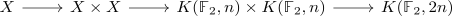
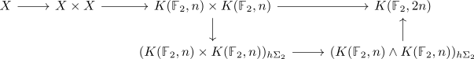

factorization of the square map of the steenrod operation
Proposition
Let $X$ be a topological space and $x \in H^n(X;\mathbb{F}_2) \cong [X, K((\mathbb{F}_2),n)]$ Then consider the diagram

as cup product of singular cohomology.
Then this admits a factorization

Proof
Then
\begin{align*}
X \times E \Sigma_k \rightarrow (X \times E\Sigma_k)/\Sigma_k
\end{align*}
is a covering map
similarly
\begin{align*}
* \times E \Sigma_k \rightarrow (* \times E\Sigma_k)/\Sigma_k = (*)_{h \Sigma_k}
\end{align*}
is a covering map
This
\begin{align*}
C_{*}^{\mathrm{sing}}(X \times E\Sigma_k, x \times E \Sigma_k, \mathbb{Z}) \otimes_{\mathbb{Z}[\Sigma_k]} \mathbb{Z} \rightarrow C_{*}^{\mathrm{sing}}(X_{h\Sigma_k}, *_{h\Sigma_k}) \rightarrow C^{\mathrm{sing}}_{*}((X,*)_{h\Sigma_k})
\end{align*}